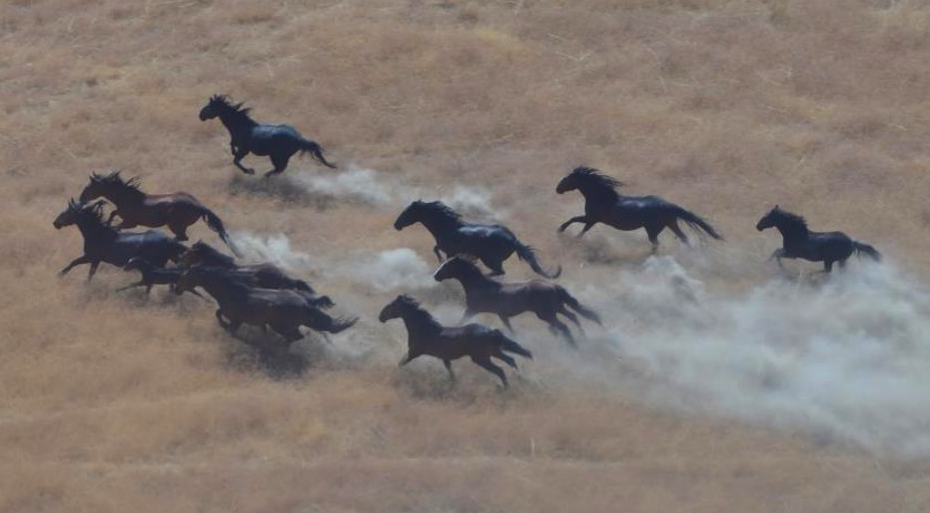
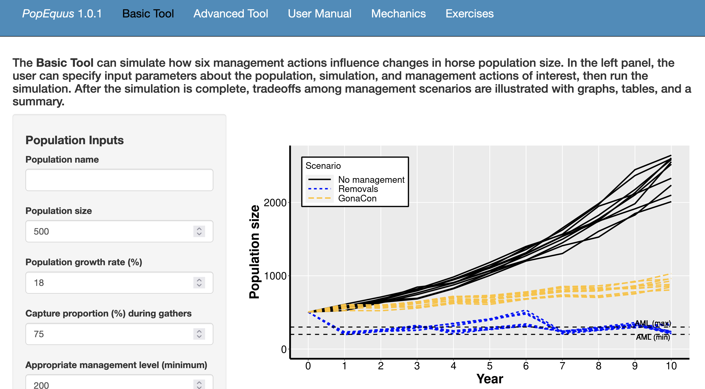
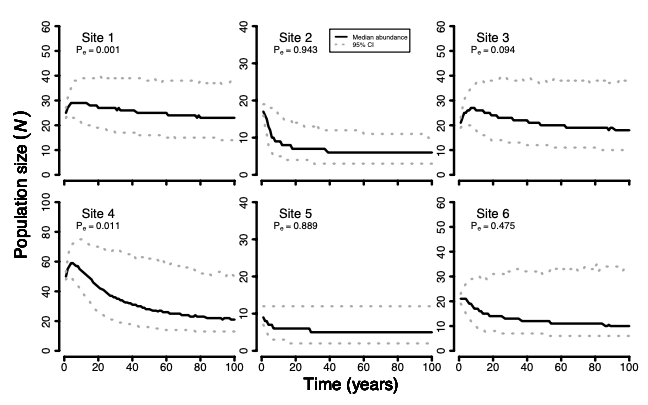
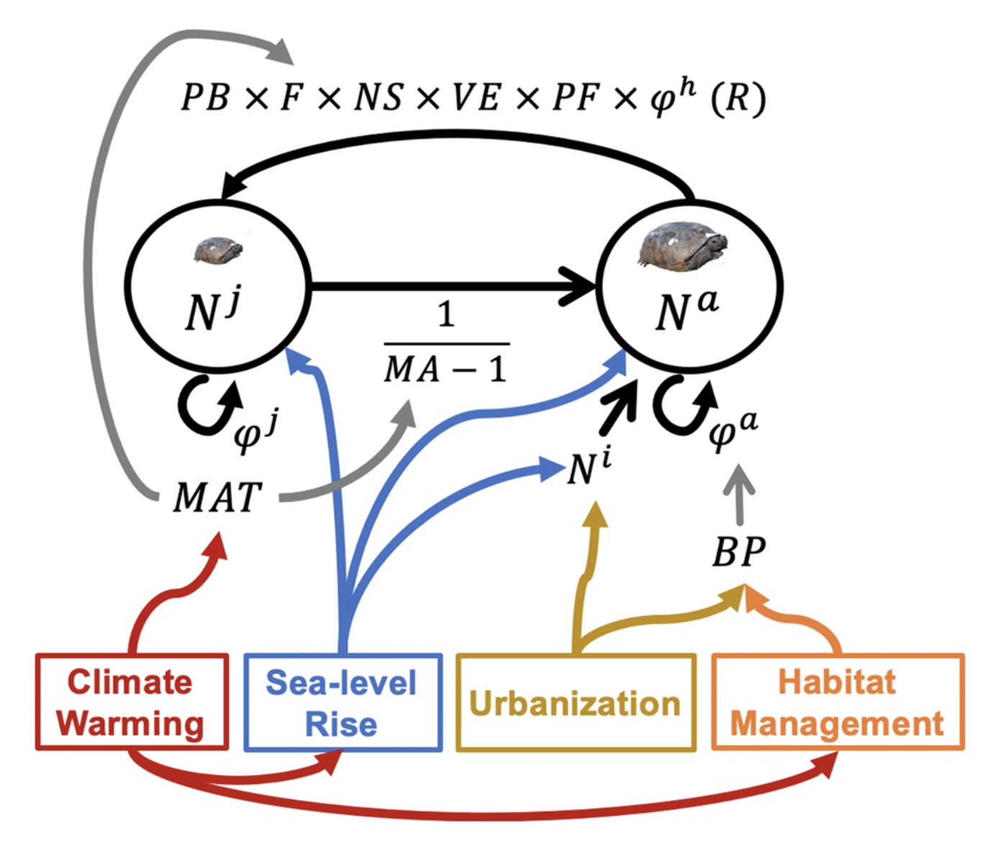

I study wild animal populations from fundamental and applied perspectives. I conduct fundamental research that tests hypotheses about how populations function, and then I work to understand how populations can be managed in ways that maximizes important societal values, such as preventing species extinction, maximizing ecosystem health, and reducing management cost.
Decision makers in natural resource management are challenged by complex decisions with great uncertainty. To help navigate difficult decisions, I work with decision makers to use decision analysis tools (e.g., structured decision making) to improve shared understanding of problems, objectives, alternatives, and important trade-offs in the decision. This work often takes a co-production approach, where we work together as a group to understand the problem, build science products, and improve decision-support products in an iterative fashion. End products include reports, science articles, and dynamic computer applications that, for example, use predictive models to estimate how well alternatives might achieve different objectives during decisions.
My work is collaborative in nature and I rely on diverse teams of students, post-docs, scientists, cooperating experts, and decision makers. Together, we create well-rounded teams that work collaboratively to understand problems, build products, and communicate actionable science to decision makers.
Click on the bold topics below to toggle ‘Case Studies’ describing examples of my work.

The Wild and Free-roaming Horses and Burros Act (WFRHBA 1971) designates certain populations of feral horses on federal lands in the western U.S. as ‘wild’ horses and burros. The law also mandates that these populations must be managed to achieve a sustainable balance between horse populations and other uses on the landscape (wildlife, ranching, etc.). Because no predators limit horse and burro populations in western North America, the populations grow quickly, can disrupt the sustainability of ecosystems, cause millions of dollars of annual costs to manage, and frustrate diverse stakeholders who feel that their interests are not met.

The Bureau of Land Management (BLM) and U.S. Forest Service (USFS) have decision authority for >175 wild horse and burro populations. Horse population management is a complex issue with multiple competing objectives related to resulting horse population size, horse handling, and fiscal costs. To help decision makers understand trade-offs among alternatives, I worked with staff from the BLM Wild Horse and Burro Program to co-produce PopEquus, an online simulation tool for wild horse population management. Users can specify features of a horse population (e.g., population growth rate) and simulate 19 management alternatives in a customizable, user-friendly interface that graphs predicted outcomes related to important metrics. PopEquus is being used by wildlife managers to support management decisions for populations of wild horses and burros across the West, which have important consequences for the management of many sensitive ecosystems. A manuscript describing results from this software is ‘in press’ (Folt et al. 2023).
Central to the challenge of horse population management is that horse populations grow quickly (e.g., 15-20% increases per year), and population growth rate is a key input to PopEquus. However, most studies of this topic date back to the 1980–2000, and we poorly understand environmental, spatial, or temporal effects on population growth rates. I again worked with BLM staff to analyze 8 years of horse population estimates from aerial surveys of 35 populations in an hierarchical population model. We estimated effects of geography, fertility control treatment, and population density on population growth rates of horse populations across the West. A manuscript describing results is ‘in preparation’. These results will help wildlife managers prioritize populations for management depending on population growth rate and evaluate the effectiveness of previous management alternatives (e.g., fertility control treatment).

Populations with high survival, low recruitment rates, and long generation times (i.e., K-selected species) are often sensitive to and imperiled when humans influence adult survival. North American tortoises (Gopherus species) exemplify this challenge. Both the Gopher Tortoise (G. polyphemus) and Mojave Desert Tortoise (G. agassizii) have experienced large population declines and both species are listed as ‘Threatened’ under the U.S. Endangered Species Act. State and federal agencies (U.S. Fish and Wildlife Service; USFWS) require predictive models for tortoises (e.g., population viability analysis) that can assess current and future extinction risk and evaluate the consequences of management alternatives on future population conditions.

I worked with the Alabama Dept. of Conservation and Natural Resources (ADCNR) to evaluate population viability of Gopher Tortoises in populations that experienced different landscape-scale management over a 30-year period. We found that when habitat was managed with prescribed fire to achieve open-canopy forest structure, small populations (20–30 individuals) were stable in population size over three decades, which refined our understanding of the species’ minimum viable population size (Folt et al. 2021).

To inform a Species Status Assessment for the Gopher Tortoise, the U.S. Fish and Wildlife Service required a regional-scale predictive model to understand the species’ future population conditions under scenarios of climate warming, sea-level rise, urbanization, and varying habitat management. We evaluated range-wide population persistence and extinction risk and presented this information to decision makers during the species Reclassification under the ESA (Folt et al. 2022). Ultimately, the USFWS decided that the species’ listing status did not require a change and the species remains ‘Threatened’.
I am now working on a Department of Defense (DoD)-funded project to integrate long-term datasets and estimate historical and future population dynamics of the Mojave Desert Tortoise across the species range. We are using a co-production approach to elicit important threats and management actions, and then using advanced machine-learning and geospatial techniques to estimate landscape-scale threat layers. Ultimately, we aim to model population dynamics as a consequence of past and future threats and management, with the goal of helping DoD installations more effectively manage tortoise populations and increase military readiness (Project webpage).

The Eastern Indigo Snake (Drymarchon couperi) is a federally ‘Threatened’ species under the Endangered Species Act that has experienced population declines throughout most of its range. The species is functionally extirpated in Alabama, Mississippi, and the Florida panhandle, and population re-establishment via reintroduction at improved habitats in Alabama and Florida was identified as an important recovery criterion in the U.S. Fish and Wildlife Service’s Recover Plan for the species. A captive breeding colony was established at the Central Florida Zoo, and an expert committee was established to guide reintroduction efforts. However, experts needed information about how many individuals needed to be released at release sites to create self sustaining populations while maintaining positive growth of the captive population and minimizing cost. The decision maker for these efforts is the U.S. Fish and Wildlife Service (USFWS)

As a post-doc, I worked with the expert committee and USFWS to co-produce a population model guiding reintroductions that evaluated the sensitivity of population viability to the release size (number of snakes), age (snake age class), and frequency (number of release years) (Folt et al. 2019). The decision maker has attempted to follow these recommendations and efforts have seen signs of reintroduction success in recent years (e.g., hatchling snakes!).
The USFWS reintroduction plan suddenly came under fire when a genetic study was published suggesting that the Eastern Indigo Snake might comprise two distinct species and that reintroductions allegedly were releasing the incorrect species. However, this study relied on a single genetic marker. To more robustly test this hypothesis, I worked with scientists from multiple agencies to synthesize multiple lines of evidence (genetic, morphological, and life history), and we found strong support for there only being one species (Folt et al. 2019, Guyer et al. 2021). This decreased logistical burden for the decision makers, thereby increasing likelihood of reintroduction success. To communicate this complex situation, I wrote an op-ed to the local newspaper explaining reintroduction rationale and the science supporting it (Tallahassee Democrat).
Decision makers in natural resource management are faced with complex problems with multiple stakeholders, competing objectives, considerable uncertainty, and limited budgets. I help decision makers navigate problems using values-focused decision analysis (e.g., structured decision making), facilitated meetings, and/or analytical methods to understand trade-offs and evaluate the strength of alternatives (Lawson et al. 2021, Folt et al. 2022).